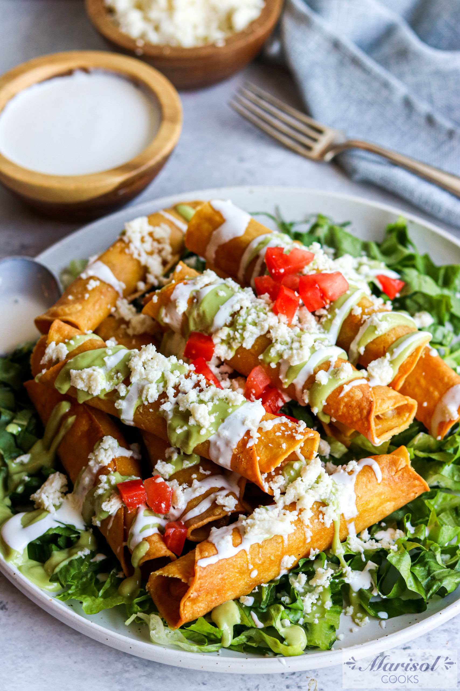

Chicken Flautas

The Perfect Appetizer
From burritos to quesadillas, you really can’t go wrong with chicken wrapped in a tortilla! Flautas are our new favorite obsession. Made with shredded chicken wrapped in flour tortillas and then pan-fried, they’re somewhere between taquitos and chimichangas. They come together quickly, making them perfect party appetizers or a great weeknight meal served with Mexican rice and beans.
Ingredients
- 2 cups shredded cooked chicken
- 1/4 cup of chopped green chiles
- 1 cup shredded cheddar
- 1 cup of queso blanco
- 1/2 tsp of kosher salt
- 2 tsp of hot sauce
- 10 corn or flour tortillas
- 1/2 cup of vegetable or canola oil
Instructions
- In a large bowl, combine chicken, chiles, cheeses, salt, and hot sauce (if using).
- Lay 1 tortilla down on a work surface. Spread a heaping 1/4 cup of the chicken mixture onto the bottom third of the tortilla. Roll up tightly and place seam side down on a plate. Repeat with remaining tortillas and filling.
- In a 10” skillet, heat oil over medium-high heat until the temperature reaches between 350-375 degrees F. (You want to hear a sizzle as soon as the food hits the oil.)
- Add 3 of the flautas to the oil, seam side down. Cook, turning every 30 to 60 seconds, until golden all over, about 2 to 3 minutes. Transfer flautas to a large paper towel-lined plate or baking sheet. Repeat with remaining flautas. Serve immediately with pico de gallo, sour cream, and guacamole.